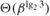

|
|
< Day Day Up > |
|
Number theory was once viewed as a beautiful but largely useless subject in pure mathematics. Today number-theoretic algorithms are used widely, due in part to the invention of cryptographic schemes based on large prime numbers. The feasibility of these schemes rests on our ability to find large primes easily, while their security rests on our inability to factor the product of large primes. This chapter presents some of the number theory and associated algorithms that underlie such applications.
Section 31.1 introduces basic concepts of number theory, such as divisibility, modular equivalence, and unique factorization. Section 31.2 studies one of the world's oldest algorithms: Euclid's algorithm for computing the greatest common divisor of two integers. Section 31.3 reviews concepts of modular arithmetic. Section 31.4 then studies the set of multiples of a given number a, modulo n, and shows how to find all solutions to the equation ax ≡ b (mod n) by using Euclid's algorithm. The Chinese remainder theorem is presented in Section 31.5. Section 31.6 considers powers of a given number a, modulo n, and presents a repeated-squaring algorithm for efficiently computing ab mod n, given a, b, and n. This operation is at the heart of efficient primality testing and of much modern cryptography. Section 31.7 then describes the RSA public-key cryptosystem. Section 31.8 examines a randomized primality test that can be used to find large primes efficiently, an essential task in creating keys for the RSA cryptosystem. Finally, Section 31.9 reviews a simple but effective heuristic for factoring small integers. It is a curious fact that factoring is one problem people may wish to be intractable, since the security of RSA depends on the difficulty of factoring large integers.
Because we shall be working with large integers, we need to adjust how we think about the size of an input and about the cost of elementary arithmetic operations.
In this chapter, a "large input" typically means an input containing "large integers" rather than an input containing "many integers" (as for sorting). Thus, we shall measure the size of an input in terms of the number of bits required to represent that input, not just the number of integers in the input. An algorithm with integer inputs a1, a2, ..., ak is a polynomial-time algorithm if it runs in time polynomial in lg a1, lg a2, ..., lg ak, that is, polynomial in the lengths of its binary-encoded inputs.
In most of this book, we have found it convenient to think of the elementary arithmetic operations (multiplications, divisions, or computing remainders) as primitive operations that take one unit of time. By counting the number of such arithmetic operations that an algorithm performs, we have a basis for making a reasonable estimate of the algorithm's actual running time on a computer. Elementary operations can be time-consuming, however, when their inputs are large. It thus becomes convenient to measure how many bit operations a number-theoretic algorithm requires. In this model, a multiplication of two β-bit integers by the ordinary method uses Θ(β2) bit operations. Similarly, the operation of dividing a β-bit integer by a shorter integer, or the operation of taking the remainder of a β-bit integer when divided by a shorter integer, can be performed in time Θ(β2) by simple algorithms. (See Exercise 31.1-11.) Faster methods are known. For example, a simple divide-and-conquer method for multiplying two β-bit integers has a running time of , and the fastest known method has a running time of Θ(β lg β lg lg β). For practical purposes, however, the Θ(β2) algorithm is often best, and we shall use this bound as a basis for our analyses.
In this chapter, algorithms are generally analyzed in terms of both the number of arithmetic operations and the number of bit operations they require.
|
|
< Day Day Up > |
|